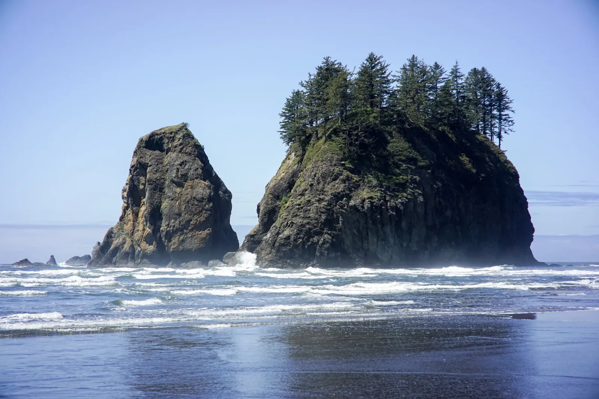

Restless Shore
Most beaches end at a parking lot. On the Olympic coast, the sand ends at a wall of spruce. The park protects more than seventy miles of this shoreline, much of it roadless, with trails that deliver you straight onto the beach. Rivers send whole trees down to the sea, and the surf stacks them along the high-tide line, bleached white as bone. Our hammocks went up between the spruce at the edge of the sand, Will's and mine, within earshot of the waves. If you plan to do the same, you will need a wilderness permit, and a tide table is just as important! Several headlands out here can only be rounded at low tide, and the Pacific does not negotiate.
The sun went down over the water, and then the moon took over, nearly full and bright enough to throw silver across the waves. We left the cameras clicking away on long exposures and fell asleep to the sound of the surf. By morning a fog had drifted in off the Pacific, and when the sun climbed above the trees it cut through in long golden shafts, down across the driftwood and the pebbles. Nearby, a lagoon the color of strong tea lay so still that the forest seemed to grow in both directions.


Then the tide went out, and the beach became a mirror. Sea stacks stood in the shallows with spruce growing from their crowns, their reflections stretched across the wet sand under a clear blue sky. Stacks are the stubborn remains of headlands: the waves chew through the softer rock and leave the hard core standing, so each one is a piece of coastline the ocean hasn't finished with yet. Back under the trees, a creek tumbled down a staircase of mossy boulders, in a hurry to join the sea. Almost nothing on this shore stays put. The logs arrived by river and will leave by tide, the sand shifts with every wave, and even the rock is being carried off a grain at a time. Everything out here is passing through, and so were we.